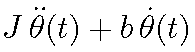
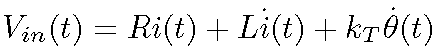
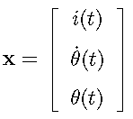
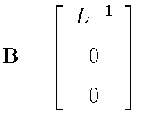

Contents
DC Motor Example
This is a small script to demonstrate the use of latexsyms, latexconv and latexdisp.
v0.2.2 20-May-2009 Update to the BSD license.
Let's start by cleaning up:
close all; clear all; clc;
Part 1 - Creating sym variables
To start, we create some symbolic variables and their LaTeX string pairs using the 'latexsyms' command.
latexsyms inductance L resistance R torque_const k_{T}
There should now be symbolic variables called 'inductance', 'resistance' and 'torque_const' in the workspace. There is also a structure called 'LatexSymbolTable' where the sym->latex pairs are stored. We can view what symbolic variables are stored here by issuing the latexsyms command with no arguments:
latexsyms
inductance -> 'L'
resistance -> 'R'
torque_const -> 'k_{T}'
Like 'syms' we can modify the properties of the symbolic variables by issuing 'real','unreal' or 'positive' at the end of a latexsyms call:
latexsyms inertia J damping b real
latexsyms has been modified to allow declaration of functions (symbols that depend upon other symbols) by placing brackets at the end of the symbol name:
latexsyms t t position(t) \theta(t) velocity(t) \dot{\theta}(t) ... accel \ddot{\theta}(t) Vin(t) V_{in}(t) Vemf(t) V_e(t) ... I(t) i(t) DI(t) \dot{i}(t)
There should now be variables in the workspace with the names 'position' 'velocity' 'accel' 'Vin' 'Vemf' 'I' 'dI'. Notice these are the names of the functions without their dependencies.
Part 2 - Converting to LaTeX
The back-emf (Vemf) of the motor is given by:
Vemf = torque_const * velocity;
Now the voltage across the motor is given by:
Vm = resistance * I + inductance * DI + Vemf;
We can generate latex output for inclusion in a latex file by using the latexconv command.
latexconv( Vm )
ans =
R\,i(t) +L\,\dot{i}(t) +k_{T}\,\dot{\theta}(t)
Unfortunately we have to add the Vin = part manually...
Vm_str = [latexconv( Vin ) '= ' latexconv( Vm )]
Vm_str =
V_{in}(t) = R\,i(t) +L\,\dot{i}(t) +k_{T}\,\dot{\theta}(t)
You may have noticed Matlab puts in a lot of manual formatting (e.g. \,). We can get rid of it by turning on the 'full' processing mode, noting that if we use latexdisp (discussed later), we should only use this if using an external LaTeX processor (also discussed later).
Vm_str = [latexconv( Vin ) '= ' latexconv( Vm, 'mode', 'full' )]
Vm_str =
V_{in}(t) = R i(t) +L \dot{i}(t) +k_{T} \dot{\theta}(t)
Finally for this section, if you have macros inside your LaTeX document that you want to use instead, you can turn on the 'macro' mode, where all syms variables are prefixed with a '\' to make them a LaTeX macro:
syms Resistance Current latexconv( Resistance * Current , 'macros', 1, 'mode', 'full' )
ans = \Resistance \Current
Part 3 - Displaying LaTeX
Latex equations can be displayed in a figure window by using the latexdisp function. For example, consider the mechanical dynamics of the DC motor:
mech_torque = inertia*accel + damping*velocity; latexdisp( mech_torque );
latexdisp can display both a string and a sym expression:
latexdisp( ['\tau=',latexconv( mech_torque )] );
latexdisp can display the math rendered using the internal Matlab LaTeX or an external LaTeX installation (this requires LaTeX to be available in the search path, and the following as a minimum: preview.sty, amsmath.sty, minimal.sty, amssymb.sty and dvipng). Let's try this with the formula for the voltage across the motor:
latexdisp( Vm_str , 'processor', 'external' );
An option common to both processors it to give the expression a name that gets put in the figure window bar, and is also the filename used when saving a formula as a picture (later):
latexdisp( Vm_str , 'expressionname', 'Voltage Across Motor' );
When using the internal processor, the fontsize can be adjusted using the 'FontSize' option. Let's define a state matrix:
state_str = [ '\mathbf{x} = ', latexconv([I;velocity;position])]; latexdisp( state_str , 'ExpressionName', 'State Vector - Matlab Processor',... 'FontSize', 18);
To change the size when using the external LaTeX processor, we use the 'ImageDPI' option. A higher ImageDPI is a larger image (I know that isn't exactly how it's supposed to work... but this is the way it is.)
state_str = [ '\mathbf{x} = ', latexconv([I;velocity;position],'mode','full')]; latexdisp( state_str, 'ExpressionName', 'State Vector-LaTeX',... 'Processor','external','ImageDPI', 500 );
When using the external processor, we can also specify a preamble string to be included in the processed file. For example:
preamble = '\newcommand{\AMat}{\mathbf{A}}'; A_matrix = [-resistance/inductance, -torque_const/inductance, 0; torque_const/inertia, -damping/inertia, 0; 0, 1, 0]; A_str = [ '\AMat = ', latexconv(A_matrix,'mode','full') ]; latexdisp(A_str, 'processor', 'external', 'expressionname', 'A Matrix', ... 'preamblestring',preamble);
Finally, the last option common is common to both processors - to save the result as an image. When using the internal processor, the image is saved in eps format, and when using the external processor, it's saved to png format. The image file is named after ExpressionName.
B_str = ['\mathbf{B}=',latexconv([1/inductance;0;0])]; latexdisp( B_str, 'ExpressionName', 'B Matrix - matlab processor' ,... 'SaveImage', 1);
C_str = ['\mathbf{C}=',latexconv(sym([0,1,0]),'mode','full')]; latexdisp( C_str, 'ExpressionName', 'C Matrix - LaTeX processor', ... 'processor', 'external', 'SaveImage', 1 );